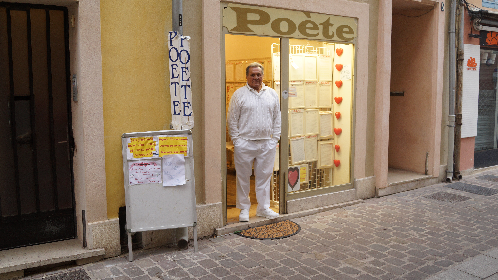

Short documentary / France
4800
Set in the coastal town of Cassis, the film follows the presence of Chriss, a poet whose words and rhythms inhabit the landscape of the Calanques. Emerging from a filmmaking residency, the project navigates between territory, language and perception, questioning how a place is observed, narrated and transformed through artistic encounter.
Synopsis
In Cassis, a film crew searches for a subject as part of an artistic residency. Their encounter with Chriss, a poet rooted in the territory, gradually shifts the direction of the film. What begins as a search becomes an immersion — where voice, landscape and presence intersect.
Context
The film was developed within the residency program “Les Calanques, territoire de sciences, source d’inspiration,” promoted by the Parc national des Calanques, the Camargo Foundation and Institut Pythéas. Conceived during the Master’s program in Documentary Filmmaking at Aix-Marseille Université, the project reflects a research-based approach to cinema, where fieldwork, encounter and territory shape the narrative form.
Approach
The film operates at the boundary between observation and construction. Rather than imposing a predefined narrative, it allows the presence of the poet and the specificity of the location to guide the cinematic gesture. The landscape becomes both subject and structure, while language — spoken, performed, fragmented — opens a space between documentary and poetic form.
Intent
4800 explores how a territory can be read, inhabited and reinterpreted through artistic practice. It questions the position of the filmmaker in relation to place and subject, revealing cinema not as a tool of capture, but as a process of negotiation, translation and presence.
Project trajectory
- Developed during Master Écritures Documentaires – Aix-Marseille Université
- Created within the Calanques artistic residency program
- In collaboration with Parc national des Calanques, Fondation Camargo and Institut Pythéas
- Research-based documentary practice combining territory and artistic exploration
